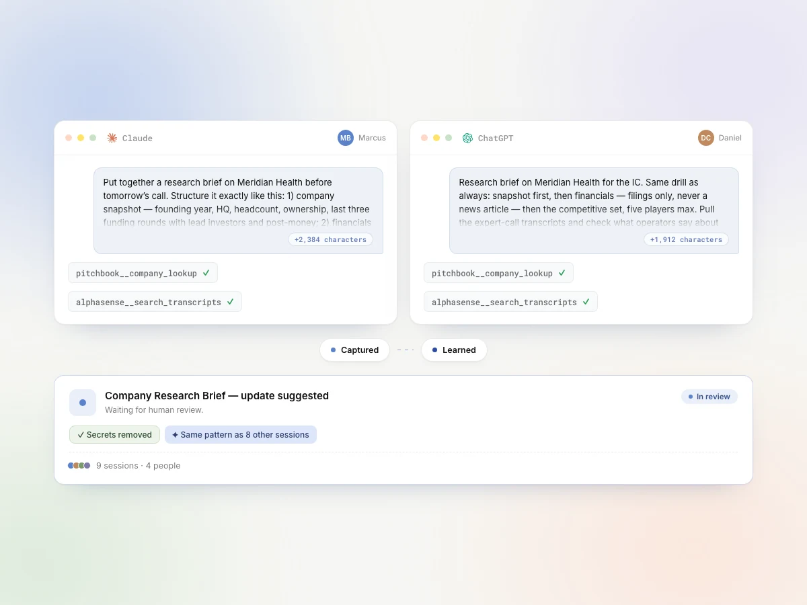
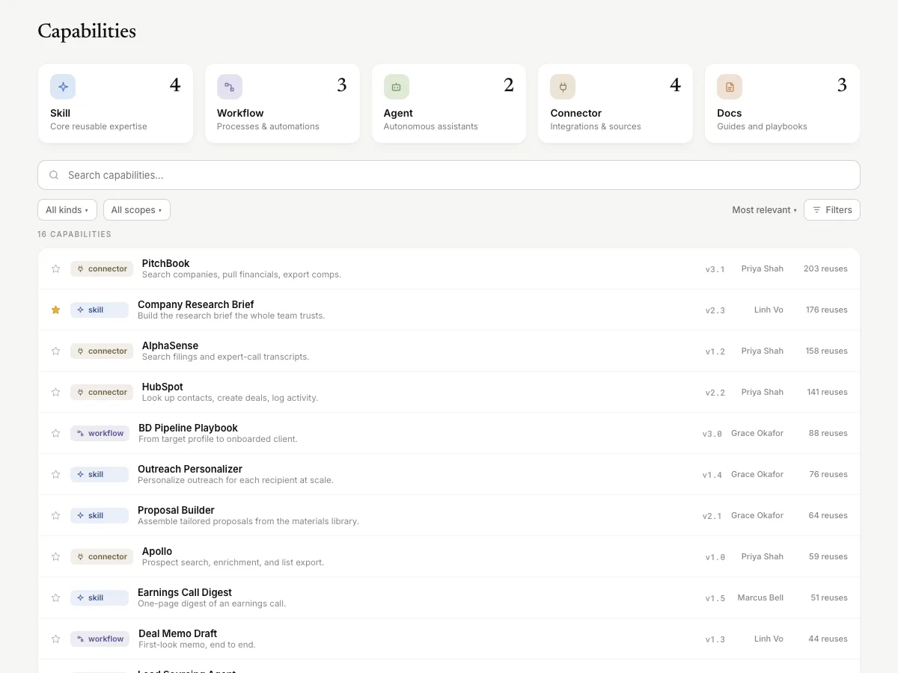
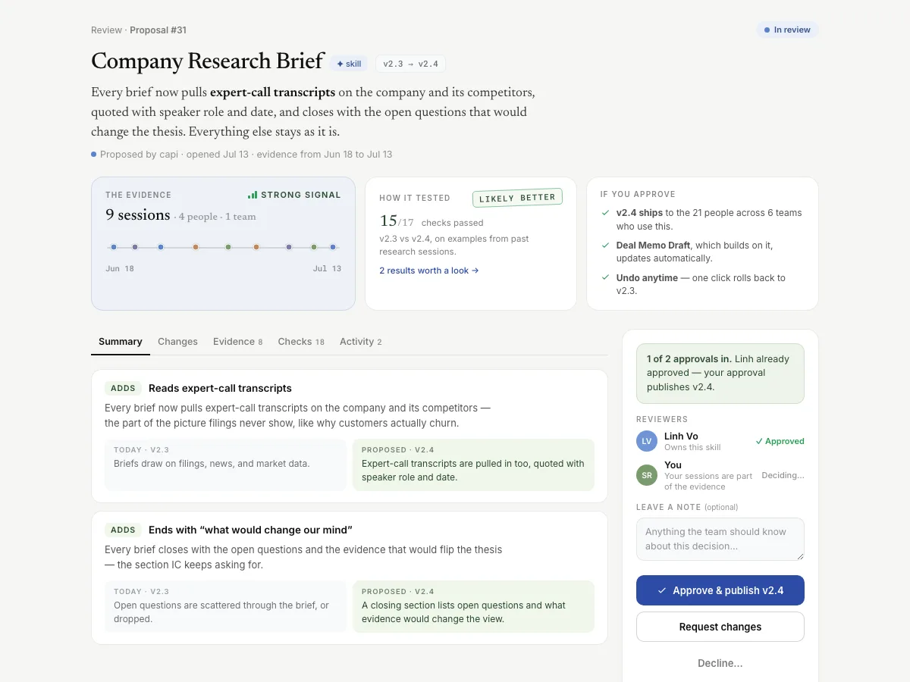

Where company AI
skills
compound.
Turn your team's best AI work into a shared library everyone can reuse.
Whole-company AI capability.
Any proven way your team works with AI: a skill, workflow, agent, connector, or doc. One library, not a hundred scattered chats.
How it works
Capture the AI work that's actually worth keeping.
Capi captures passively from the AI apps people already use (Claude, ChatGPT, Perplexity, and more), or by hand when someone contributes a capability.
 Claude
Claude
![](data:image/svg+xml,%3Csvg xmlns='http://www.w3.org/2000/svg' viewBox='0 0 24 24' fill='%2310A37F'%3E%3Cpath d='M22.2819 9.8211a5.9847 5.9847 0 0 0-.5157-4.9108 6.0462 6.0462 0 0 0-6.5098-2.9A6.0651 6.0651 0 0 0 4.9807 4.1818a5.9847 5.9847 0 0 0-3.9977 2.9 6.0462 6.0462 0 0 0 .7427 7.0966 5.98 5.98 0 0 0 .511 4.9107 6.051 6.051 0 0 0 6.5146 2.9001A5.9847 5.9847 0 0 0 13.2599 24a6.0557 6.0557 0 0 0 5.7718-4.2058 5.9894 5.9894 0 0 0 3.9977-2.9001 6.0557 6.0557 0 0 0-.7475-7.073zm-9.022 12.6081a4.4755 4.4755 0 0 1-2.8764-1.0408l.1419-.0804 4.7783-2.7582a.7948.7948 0 0 0 .3927-.6813v-6.7369l2.02 1.1686a.071.071 0 0 1 .038.052v5.5826a4.504 4.504 0 0 1-4.4945 4.4944zm-9.6607-4.1254a4.4708 4.4708 0 0 1-.5346-3.0137l.142.0852 4.783 2.7582a.7712.7712 0 0 0 .7806 0l5.8428-3.3685v2.3324a.0804.0804 0 0 1-.0332.0615L9.74 19.9502a4.4992 4.4992 0 0 1-6.1408-1.6464zM2.3408 7.8956a4.485 4.485 0 0 1 2.3655-1.9728V11.6a.7664.7664 0 0 0 .3879.6765l5.8144 3.3543-2.0201 1.1685a.0757.0757 0 0 1-.071 0l-4.8303-2.7865A4.504 4.504 0 0 1 2.3408 7.8956zm16.5963 3.8558L13.1038 8.364 15.1192 7.2a.0757.0757 0 0 1 .071 0l4.8303 2.7913a4.4944 4.4944 0 0 1-.6765 8.1042v-5.6772a.79.79 0 0 0-.407-.667zm2.0107-3.0231l-.142-.0852-4.7735-2.7818a.7759.7759 0 0 0-.7854 0L9.409 9.2297V6.8974a.0662.0662 0 0 1 .0284-.0615l4.8303-2.7866a4.4992 4.4992 0 0 1 6.6802 4.66zM8.3065 12.863l-2.02-1.1638a.0804.0804 0 0 1-.038-.0567V6.0742a4.4992 4.4992 0 0 1 7.3757-3.4537l-.142.0805L8.704 5.459a.7948.7948 0 0 0-.3927.6813zm1.0976-2.3654l2.602-1.4998 2.6069 1.4998v2.9994l-2.5974 1.4997-2.6067-1.4997z'/%3E%3C/svg%3E) ChatGPT
ChatGPT
 Perplexity
Perplexity
 Any AI app
Any AI app


Find and reuse what a colleague already solved.
Search the capability library before you start from scratch. Five kinds, one searchable place.
Your assistant finds it for you: apps on the Capi MCP server pull in the right capability mid-task.
Shows up right inside the AI apps your team already uses.
Govern AI without slowing people down.
Every change is a new version: proposed with evidence, reviewed by named people, and published with a full audit trail. Nothing changes silently.
Your team's work stays visible to your team only.
Secrets are stripped out before anything is saved.
Every version is kept, so you can roll back in one click.
Updates show up as proposals, so nothing changes behind your back.

The loop that turns work into memory.
Five stages, each grounded in a real system layer underneath. The whole loop runs continuously, and every reuse feeds the next capture.
continuously
Capture
Work happens in Claude, ChatGPT, Perplexity, or added directly.
The more context we capture, the smarter everything downstream becomes.
Learn
Recurring patterns across people and teams are recognized.
A pattern only counts once it shows up across people, not once.
Review
A human checks it, or it's auto-approved when it passes the guardrails an admin set.
Nothing publishes without a reason attached to it.
Publish
The approved capability becomes a new, versioned release.
Nothing is overwritten, so nothing is ever truly lost.
Reuse
Any AI app on your team can discover and use it.
The next person starts from what already works, not from zero.
⟲ Every reuse feeds the next capture.
Frequently asked questions
Passively, from the AI apps people already use (Claude, ChatGPT, Perplexity, and more), via integrations and a browser extension. Someone can also add a capability by hand.
No. Everything stays in the apps your team already uses. Capi runs the loop underneath and serves proven capabilities back into those same apps.
A human checks each recurring pattern, or it's auto-approved when it passes the guardrails an admin has set. Every change carries rationale, evidence, and a diff.
Five kinds, all in one searchable library: skills, connectors, workflows, agents, and docs.
Yes. Every capability has full version history with one-click rollback, so nothing is permanent that you can't cleanly undo.
Through a governance layer with roles, approvals, and a full audit trail. Capabilities are scoped by team, so finance or HR work stays invisible to everyone outside those teams, and secrets are redacted on capture before anything is stored. Leads and admins also get stats on adoption, reuse, duplication, and gaps.
Any AI app your team already uses. Discovery is served straight into the tools people work in every day.
Start compounding your team's AI knowledge.
We're opening a small founding design-partner cohort, limited by how much hands-on onboarding we can give each team, not an artificial countdown.